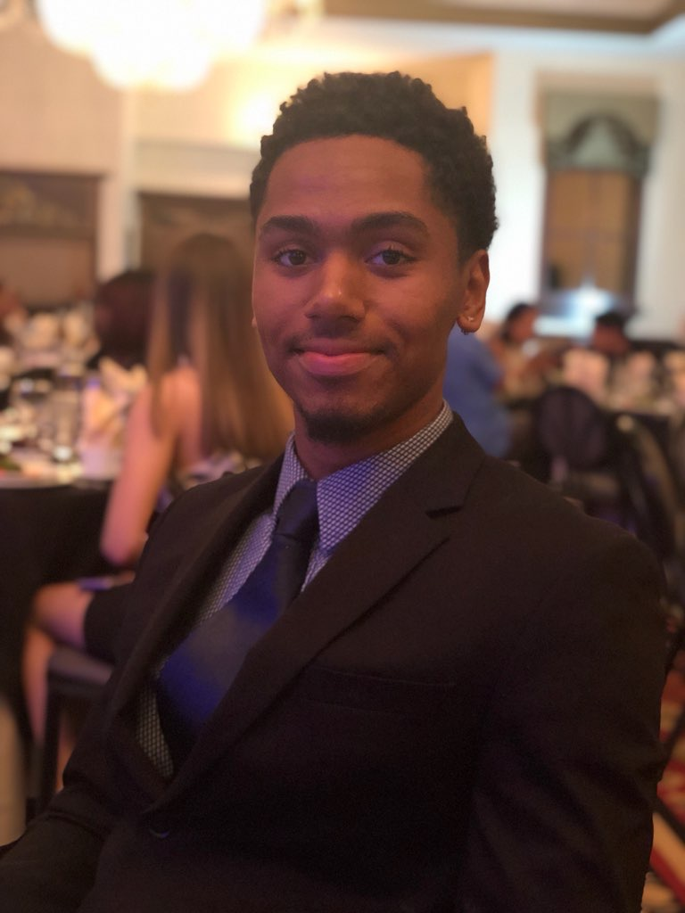

Background information
About me
My name is Esan Millet and I grew up in Fort Lauderale, Florida. I Have artistic abilities and I am Majoring in Finance with a minor in management. I can speak Spanish pretty fluently and I am currently taking Japanese. My goal before graduation is to know Arabic, Spanish, Japanese, and English as 4 mastered langauges. I am cofounder of both Soiree and Nogurt. Soiree is a party planning and event promotion company that uses the latest technology to create the best party experience. Nogurt is a fat free yogurt company that strives to bring health and fitness to everyone around the world. I am also a student at the university of Miami studying Finance and Management. My ultimate goal is to have a successfull business. 